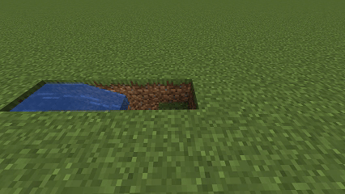
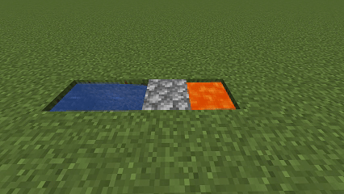

Для создания бесконечного генератора булыжника найдите подходящее место, желательно ровную поверхность земли. Выкопайте углубления для воды и лавы.
После подготовки необходимых углублений залейте воду.


Затем возьмите ведро с лавой и залейте её во второе углубление.
Готово! Вы получили бесконечный генератор булыжника.
